[TOC]
- Title: Agent57: Outperforming the Atari Human Benchmark 2020
- Author: Adria Badia et. al.
- Publish Year: 2020
- Review Date: Nov 2021
Summary of paper
This needs to be only 1-3 sentences, but it demonstrates that you understand the paper and, moreover, can summarize it more concisely than the author in his abstract.
Agent57 is the SOTA Atari RL agent in 2020 that can play difficult Atari games like “Montezuma’s Revenge, “Pitfall”, “Solaris” and “Skiing”.
Before we understand how Agent57 works, we shall look at its ancestry and how it evolves from DQN agent in 2015.
Recurrent Replay Distributed DQN (R2D2)
DQN efficiency and effectiveness improvements
Double DQN (https://www.youtube.com/watch?v=ECV5yeigZIg&list=PLYgyoWurxA_8ePNUuTLDtMvzyf-YW7im2&index=8)
the Original DQN would often overestimate the Q value (make it higher). It’s true because the maximum Q value estimated by the network may be outdated very quickly.
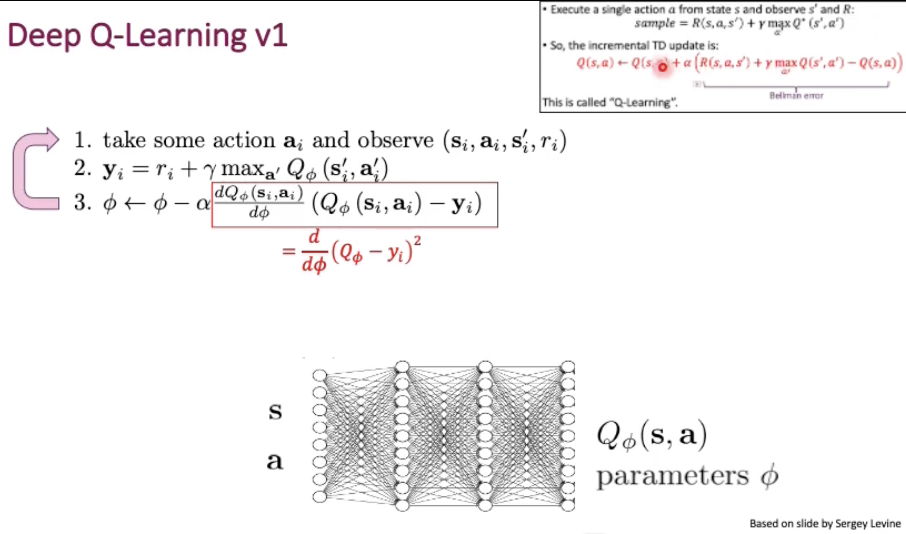
But if we has this online learning and update the Network immidiately for every action, then we would have Correlated Sampling in Online-Q-Learning problem.
This cause the network to always overfit to a small neighbourhood of the states.
Besides that, the target Q value is generated by our current network. (in fact, we do not have exact target Q value from online learning because we haven’t reached the end of the game)
So, the agent need a experience memory (Experience Replay) to collect the experience of the whole episodes. The reason is because otherwise we cannot get our fixed Q-value label. (our Q value label require we complete enough rounds of episodes)
Advantages:
- Breaks correlations between consecutive samples
- Each experience step may influence multiple gradient updates (no need to drop)
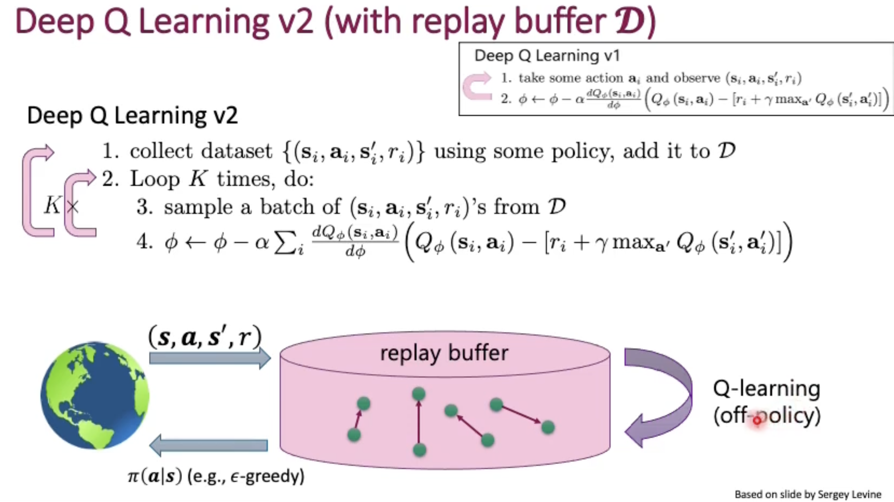
But again our target Q value is generated by our current network and thus no stable gradient through this target Q value because it also moves as our network improves.
Solution -> force our target Q value (obtained by Bellman function) fixed for some duration.
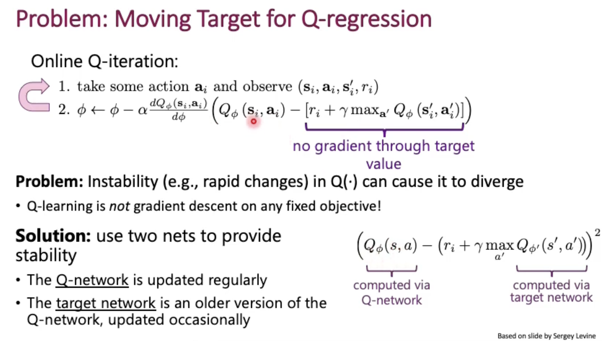
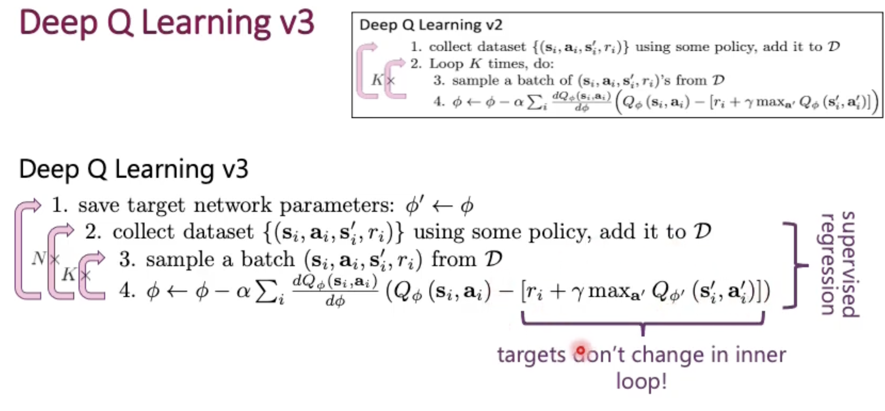
Now let’s solve the overestimation problem
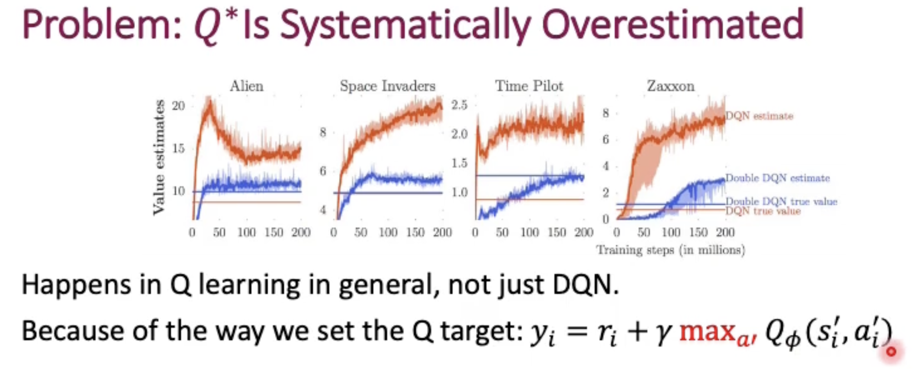
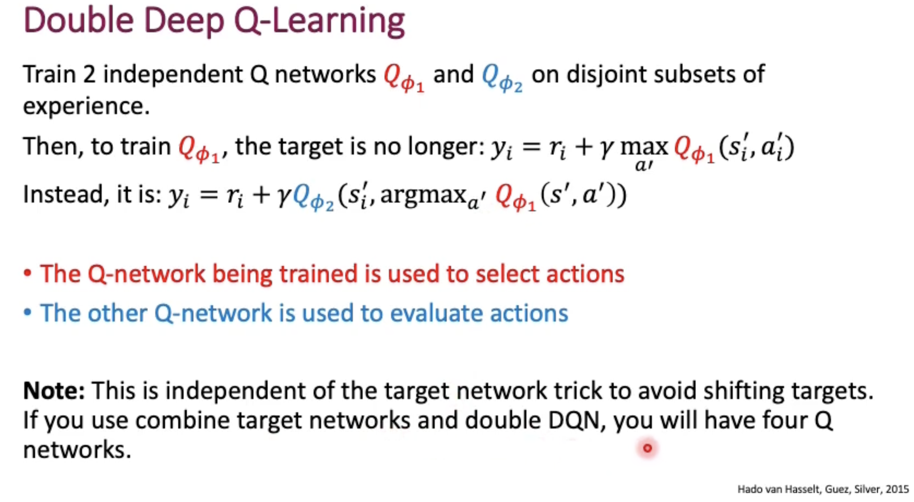
prioritised experience replay (https://www.youtube.com/watch?v=MqZmwQoOXw4)
we do not want randomly sample the experience.
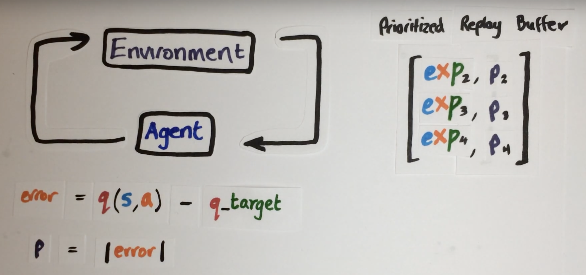
However, we need to take care of the sample distribution problem and we do not want to overfit to the small neighbourhood of those hard samples, thus we introduce a importance weight.
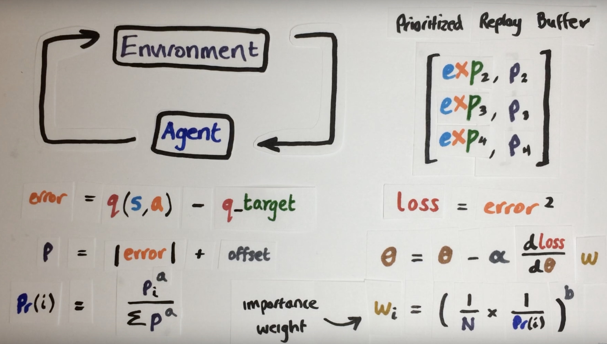
Thus, now we coarsely learn the easy scenes but finely learn the hard scenes
Dueling architecture
For some states, estimating Q value of all actions is not useful.
(I may believe that this is a similar improvement as ResNet to ResNeXt (divide and conquer))
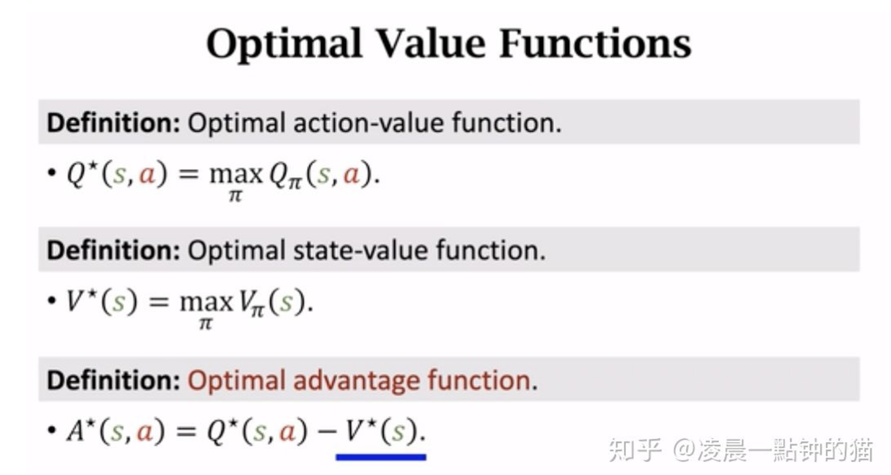
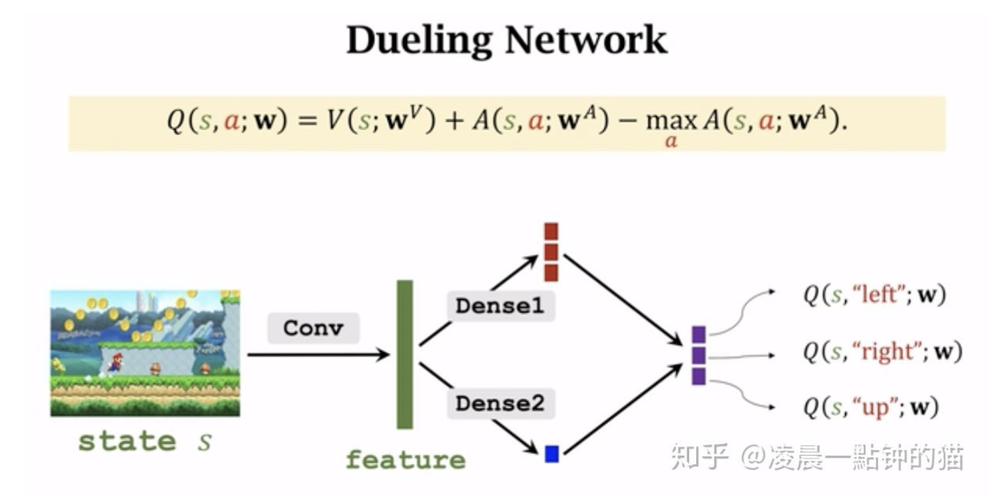
Distributed agents
distributed RL agent decouples the data collection and learning process.
Many actors interact with independent copies of the environment, feeding data to a central ‘memory bank’ in the form of a prioritized replay buffer.
A learner then samples training data from this replay buffer and get trained.
The learner weights are sent to the actors frequently, allowing actors to update their own weights in a manner determined by their individual priorities.
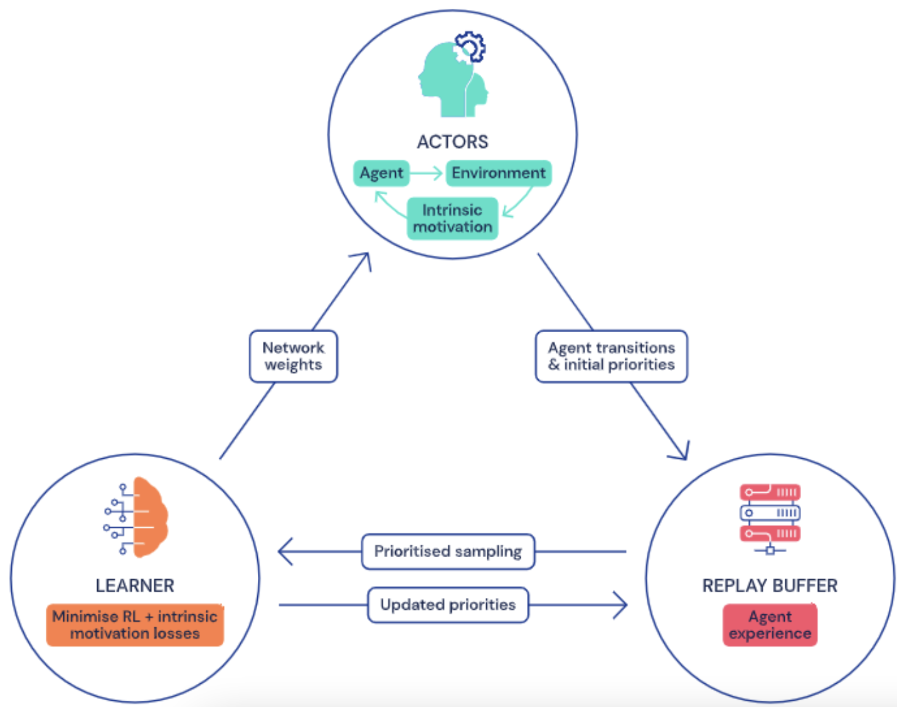
Short-term memory
Memory allows agents to make decisions based on a sequence of observations, which can reveal more information about the environment as a whole.
Therefore the role of memor is to aggregate information from past observations to improve the decision making procecss. In deep RL and deep learning, RNN such as LSTM are used as short term memories.
But how to combine memories with off-policy learner?
(R2D2)
Instead of regular (s,a,r,s’) transition tuples in the replay buffer, we store fixed-length (m=80) sequence of (s,a,r), with adjacent sequence overlapping each other by 40 time steps, and never crossing episode boundaries. When training, we unroll bot online and target networks on the same sequence of states to generate value estimates and targets.
Never Give Up RL agent
Episodic memory
The episodic memory M is a dynamically-sized slot-based memory that stores the controllable states in an online fashion (add memory on the fly). At time t, the memory contains the controllable states of all the observations visited in the current episode, ${f(x_0), …, f(x_t-1)}$
this enables the agent to detect when new espisodes are encountered, so the agent can explore more when encountering unseen environments rather than exploit.
Exploration improvement
Intrinsic motivation rewards encourages an agent to explore and visit as many states as possible by providing more dense “internal” rewards for novelty-seeking behaviours.
There are two types of rewards
- long-term novelty rewards that encourage visiting many states throughout training, across many episodes.
- adjusted by how often the agent has seen a state similar to the current one relative to states seen overall.
- Short-term novelty rewards that encourage visiting many states within a single episode of a game.
- use the episodic memory to recognise novel experiences.
- the magnitude of the reward is determined by measuring the distance between the present state and previous state recorded in episodic memory.
One thing about measuring the novelty is that measuring the novelty features rather than the original observations would be a better approach.
After that, assigning actors with different policies based on the importance weighting on the total novelty reward would produce different experiences, ensuring more exploration
Meta controller
Use a traditional sliding window UCB bandit to control the exploration factor as well as the discount factor
Some key terms
Extensive exploration problem
For Montezuma’s Revenge and Pitfall, a extensive exploration is required for the agent to understand the environment.
Long-term credit assignment problem
For Skiing and Solaris Atari games, the current action may affect the far future reward and thus a low discount factor for the Q value is not suitable.
On-policy learner
which can only learn the value of its direct actions.
Off-policy learner
which can learn about optimal actions even when not performing those actions.
e.g., it might be taking random actions, but can still learn what the best possible action would be later.
Off-policy learning is therefore a desirable property for agents, helping them learn the best course of action to take while thoroughly exploring their environments.